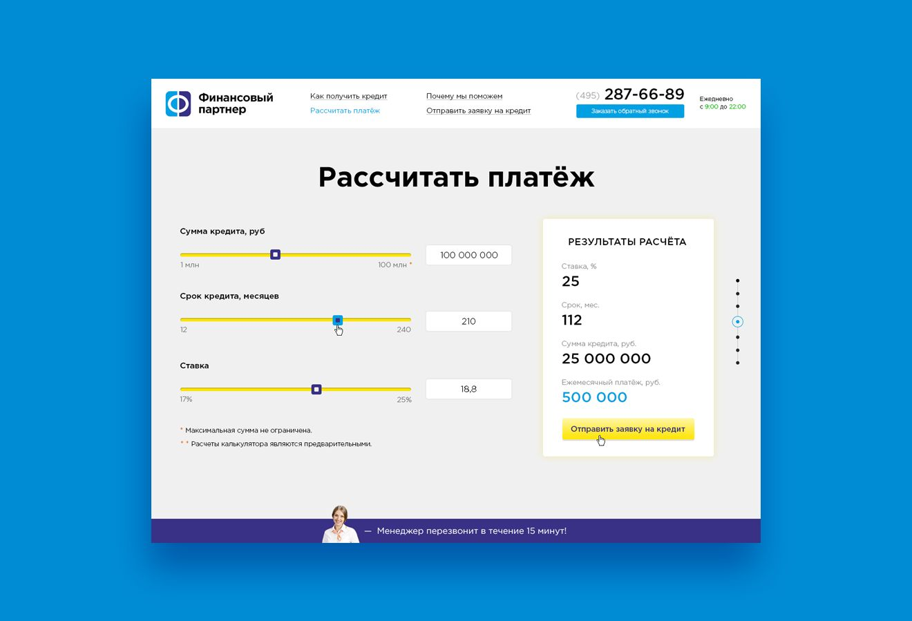

Исследовательский Этап
Веб-сайт - это совокупность веб-страниц, связанных между собой гиперссылками. Они разрабатываются и поддерживаются веб-разработчиками с помощью языков программирования, таких как HTML, CSS, JavaScript, для создания визуального и функционального содержания веб-страниц.Виды Веб-Сайтов
1
СтатическийЭто сайт, состоящий из статических HTML-страниц, которые уже созданы и хранятся на сервере. Он не выполняет никаких Вычислений или Генерации Контента
2
ДинамическийЭто сайт, который содержит динамический контент, который может изменяться или обновляться в реальном времени.
 Пример Динамического Веб-Сайта
Создание сайта является эффективным способом решения индивидуальных проблем и удовлетворения потребностей. Сайт может быть создан для самых различных целей, от онлайн магазина до личного блога.
Какие Навыки Нужны?
Верстка - Это процесс создания веб-страницы по заранее готовому макету. Она включает в себя создание кода страницы при помощи языка HTML, и оформление её с помощью каскадных таблиц стилей CSS. HTML состоит из набора тегов, которые определяют различные элементы страницы, такие как заголовки, параграфы, ссылки, изображения, таблицы и другие. CSS это язык стилей, используемый для оформления веб-страниц. Он предоставляет возможность задавать внешний вид и расположение элементов на странице, определять цвета, шрифты, размеры и другие свойства элементов.